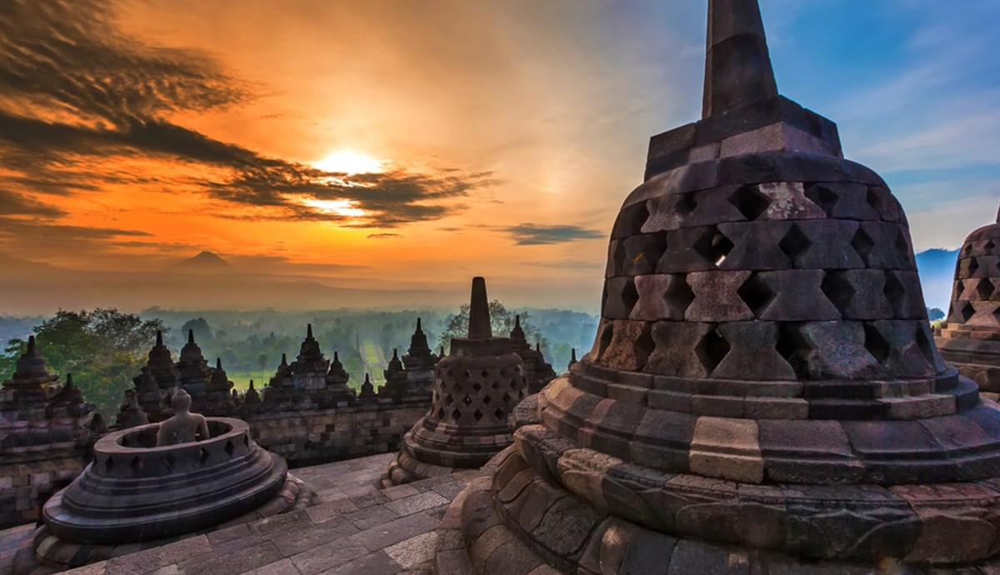

Borobudur, Jawa Tengah
Borobudur adalah candi atau kuil Buddha terbesar di dunia. Candi Borobudur terletak di Magelang, Jawa tengah

Raja Ampat, Papua
Kepulauan Raja Ampat merupakan rangkaian empat gugusan pulau yang berdekatan dan berlokasi di barat bagian Kepala Burung (Vogelkoop) Pulau Papua

Labuan Bajo, Nusa Tenggara Timur
Destinasi ini merupakan gerbang menuju Taman Nasional Komodo yang menyimpan keindahan alam yang menakjubkan dan hewan purba yang mendunia